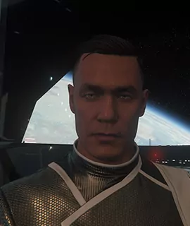

BIOGRAFIE: JOHN BLACKWOOD
Bio von Dr. med. John Blackwood

John Blackwood
Geburtsdatum: 31. Dezember 2916
Alter: 34
Geburtsort: Rytif / Stalford Bremen II
UEE Status: Citizen
Dienstzeit: 11/32 -12/45
Haarfarbe: Schwarz
Augenfarbe: Gelb
Größe: 181 Zentimeter
Gewicht: 79 Kilogramm
Aktueller Wohnort: Arccorp/ Stanton System
Besonderheiten, Gewohnheiten -
Hobbys: Menschen analysieren, Schießen, seltene Tiere Jagen und ausstopfen
(schlechte) Angewohnheiten: Geht über Leichen um an sein Ziel zu kommen, egoistisch, egozentrisch, kaum Mitgefühl, extrem opportunistisch
Talente: Er ist auf dem Gebiet der Medizin eine Koryphäe. Kann anhand geringster Symptome erkennen was dem Patienten fehlt. Spricht mehrere alt irdische Sprachen
Tics, Marotten: Verfällt von einem Extrem ins andere, mal redet er zu viel, mal kaum etwas
Freizeitgestaltung: Widmet sich fast zu 100% der Forschung von Medizinischen Mitteln und auch der Herstellung von Drogen
rätselhafte Züge: Einige
hervorstechender Charakterzug: Arrogant, Gefühllos und kalt
Geschmack -
Bücher: Medizinische Werke von verschiedenen großen und bedeutenden Ärzen, Professoren und Wissenschaftlern -
Musik: keine Besonderen vorlieben-
Farben: Schwarz -
Kleidung: Modisch sehr eigenwillig, aber meist unauffällig, Hauptsächlich Dienstkleidung -
Essen/Trinken: Lieblings Speise Italienische Küche (Erde)
Lieblings Getränke: Kaffee (halb Kaffee, halb Milch 2x Sweets) aus Bremen oder Fizzz Cola
Lieblings Alkohol: Kein Alkohol
Er liebt: Geld und sich selbst
Er hasst: Harte körperliche Arbeit, bevormundung, Befehle zu empfangen
John Blackwood wurde am 31.12.2916 auf Rytif (Bremen II) als Sohn von Arcon und Sybil Blackwood geboren.
Geburtsdatum: 31. Dezember 2916
Alter: 34
Geburtsort: Rytif / Stalford Bremen II
UEE Status: Citizen
Dienstzeit: 11/32 -12/45
Haarfarbe: Schwarz
Augenfarbe: Gelb
Größe: 181 Zentimeter
Gewicht: 79 Kilogramm
Aktueller Wohnort: Arccorp/ Stanton System
Besonderheiten, Gewohnheiten -
Hobbys: Menschen analysieren, Schießen, seltene Tiere Jagen und ausstopfen
(schlechte) Angewohnheiten: Geht über Leichen um an sein Ziel zu kommen, egoistisch, egozentrisch, kaum Mitgefühl, extrem opportunistisch
Talente: Er ist auf dem Gebiet der Medizin eine Koryphäe. Kann anhand geringster Symptome erkennen was dem Patienten fehlt. Spricht mehrere alt irdische Sprachen
Tics, Marotten: Verfällt von einem Extrem ins andere, mal redet er zu viel, mal kaum etwas
Freizeitgestaltung: Widmet sich fast zu 100% der Forschung von Medizinischen Mitteln und auch der Herstellung von Drogen
rätselhafte Züge: Einige
hervorstechender Charakterzug: Arrogant, Gefühllos und kalt
Geschmack -
Bücher: Medizinische Werke von verschiedenen großen und bedeutenden Ärzen, Professoren und Wissenschaftlern -
Musik: keine Besonderen vorlieben-
Farben: Schwarz -
Kleidung: Modisch sehr eigenwillig, aber meist unauffällig, Hauptsächlich Dienstkleidung -
Essen/Trinken: Lieblings Speise Italienische Küche (Erde)
Lieblings Getränke: Kaffee (halb Kaffee, halb Milch 2x Sweets) aus Bremen oder Fizzz Cola
Lieblings Alkohol: Kein Alkohol
Er liebt: Geld und sich selbst
Er hasst: Harte körperliche Arbeit, bevormundung, Befehle zu empfangen
Bei seiner Entdeckung im Jahre 2441 war das Bremen System für die breite Masse noch uninteressant. Diesen Ruf behielt das System auch Jahrhunderte lang. Nachdem der einzige Planet im grünen Band, Rytif, für die Besiedlung frei gegeben wurde, wurde Bremen kontinuierlich von Menschen besiedelt. Es galt als "sichere" Alternative zu anderen, riskanteren Systemen.
Als man sich im 27. Jahrhundert im zweiten Tevarin Krieg befand, entdeckte die UEE, dass sich durch das Ökosystem auf Bremen II schwach verderbliche Lebensmittel anbauen ließen. Dadurch wurde Bremen schnell zum Hauptlieferant für die Nahrungsmittel der Fronttruppen. Die Bevölkerungszahl stieg dadurch stark an, viele der "schüchternen" Siedler wurden reich.
2640 sank die Bevölkerungszahl jedoch wieder. Die Menschheit sehnte sich nach mehr Vielfalt als Bremens einfache Nahrung bieten konnte. Sein erneut bescheidener Status ließ Bremen zur Operationsbasis der Anti-Messer Aktivisten aufsteigen. Trotzdem war der Öffentlichkeit die Wichtigkeit von Bremen für die Revolution lang nicht bewusst, bis schlussendlich der Senat streng vertrauliche Dokumente freigab.
Bremen ist heute Heimat von Consolidated Outland. Damit ist Bremen auch die erste "äußere Welt", die komplette Raumschiffe herstellt. Mit einer geschichtsträchtigen Vergangenheit und vielen natürlichen Ressourcen scheint Bremen weiterhin so etwas wie ein unerwartetes Kraftwerk im modernen, Post-Messer Imperium zu bleiben.
Arcon und Sybil waren Farmer und genügsam. Sie waren mit Ihrem Leben zufrieden, sie wurden mit 2 Söhnen beschenkt, John und sein 10 Jahre jüngerer Bruder Cogan. Doch John wollte mehr, als täglich nur Felder zu bestellen und sich um Lieferungen zu kümmern. So begann er eine Ausbildung zum Mediziner, die er auch ohne große Probleme zum Abschluss brachte und durch ein Studium auf Terra schaffte er es sogar zum Doktortitel.
In dieser Zeit kam er allerdings auch in berührung mit diversen Drogen, was Ihm leider bis heute anheftet und sein Verhalten wird oftmals davon beeinträchtigt. John´s Familie hat davon keine Ahnung, da sie es sich niemals vorstellen könnten, das eines Ihrer Kinder ein Drogenproblem haben könnte und John versteht es auch sehr gut, dies zu überspielen. Wenn es nach seinen Eltern geht, soll John trotz der vielversprechenden Ausbildung, den Familienbetrieb weiterführen, sie hatten Angst, das John seinem Ur-Ur Großvater Nerutus Blackwood nacheifert und auf einen thörichten Freiheitskampf folgt, doch John hat andere Pläne.
Er fühlt sich nicht verstanden und glaubt, das man Ihn klein halten will. Sie gerieten immer wieder in Streit.
So beschlossen Arcon und Sybil, John, die Arbeiten seines Großvaters näher zu bringen, um wenigstens etwas Kontrolle zu behalten. Dr. Alfred Blackwood forschte auf dem Gebiet der Nutzpflanzen und verstarb 2944. John sieht darin eine Chance und ergreift die Gelegenheit um sich seiner Fesseln zu lösen.
Mit kleinen Auftragsflügen hält sich John zunächst über Wasser, doch das große Geld blieb aus.
Hin und wieder kehrt er zu seiner Familie zurück, da ihm das Geld ausging, was seine Eltern jedoch wenig begrüßen, somit wurden diese Besuche mit der Zeit immer seltener.
Durch einen Bekannten aus der Schulzeit, kam John mit Zwielichtigen Personen in Kontakt und nahm verschiedene illegale Aufträge an, glücklicherweise kam er damit durch und wurde nie erwischt, was auch an einem speziellen Schiff lag, welches gerne zum schmuggeln diverser Dinge genutzt wird. Anders erging es seinen Auftragsgebern, der Schmugglerring wurde von der örtlichen Sicherheit aufgedeckt und zerschlagen, so kam John zur Star Runner, die er einfach behielt und die Signatur verändert hat. Dies war ein Warnschuss für John und er beschloss sein Leben und seine Freiheit nicht mehr für niedere Beweggründe aufs Spiel zu setzen.
John besinnt sich auf seine Ausbildung und will eine Aufgabe finden, die seinen Ansprüchen und seiner Vorstellung entspricht.Schon kurz darauf stellt er sich einer Reihe von Wissenschaftlern vor und gründet mit alten Bekannten letztlich eine kleine Vereinigung, die in verschiedenen Branchen operiert.
Durch seine Erfahrungen während der Ausbildung hat John damit begonnen Drogen herzustellen und hat diese als "Schmerzmittel" zu Testzwecken auch schon Patienten verabreicht. Was teilweise zu sehr skurrilen Momenten auf der Krankenstation führte, lachende und kichernde schwerverletzte sind keine seltenheit. Diese Drogen lässt er von Mittelsmännern auf dem Drogenmarkt verkaufen und verdient sich auf kosten und zum Leid anderer eine Menge Credits nebenbei.
John ist niemand mit dem man auf eine Party geht, oder den man zum besten Freund hat, er strahlt eine gewisse Art aus, eine Person zu der man auf privater Ebene besser auf Distanz bleibt, die man nur zu gerne wahrt. Seine arrogante und unterkühlte Art wirkt sich auch auf seine Arbeit aus, dinge wie Mitgefühl, oder Empathie kennt er nicht wirklich, er macht seine Arbeit und das Ergebnis zählt für Ihn..
Der Kontakt zu seinen Eltern ist nun fast komplett eingestellt, nur zu Geburtstagen kommt es noch zu einem kurzen Gespräch, zu seinem jüngeren Bruder Cogan hat er noch mehr Kontakt, dieser würde ihm am liebsten folgen, doch der steht noch zu sehr unter der Kontrolle der Eltern.
Für John ist das Leben wie ein Spiel, er nimmt andere nicht sonderlich ernst, doch trotzdem wird seine Meinung sehr geschätzt, da er Zielorientierte Arbeit leistet, nicht immer konventionell, aber er kommt ans Ziel.
Doktorarbeit von Dr. med. John Blackwood
Inhaltsverzeichnis und Abkürzungsverzeichnis : Seite 1 bis 8
Einleitung : Guten Tag
Fragestellung und Zielsetzung : Was haben Sie für ein Problem, ich heile
Material und Methoden : Alles was notwendig ist
Ergebnisse : nur positive
Diskussion : keine, ich hab recht
Zusammenfassung : Ich kam, ich sah, ich behandele
Literaturverzeichnis : einige Bücher von Dr. Mccoy und alle Folgen von der Schwarzwaldklinik
Danksagung: Danke